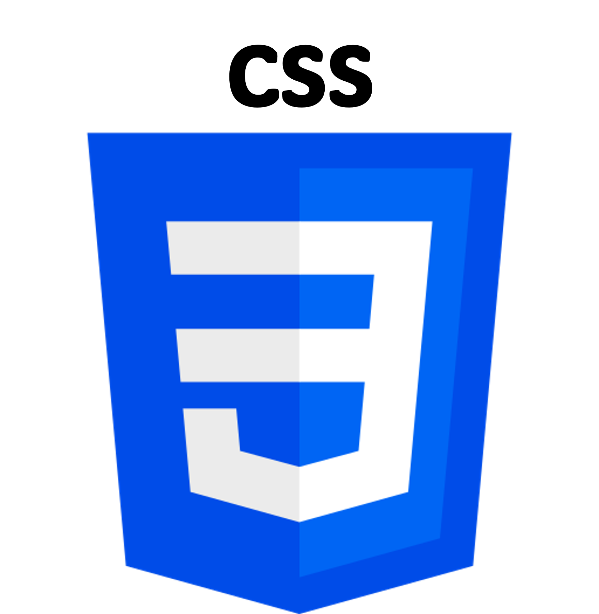
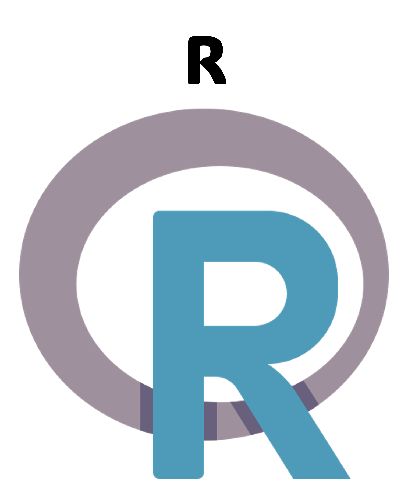
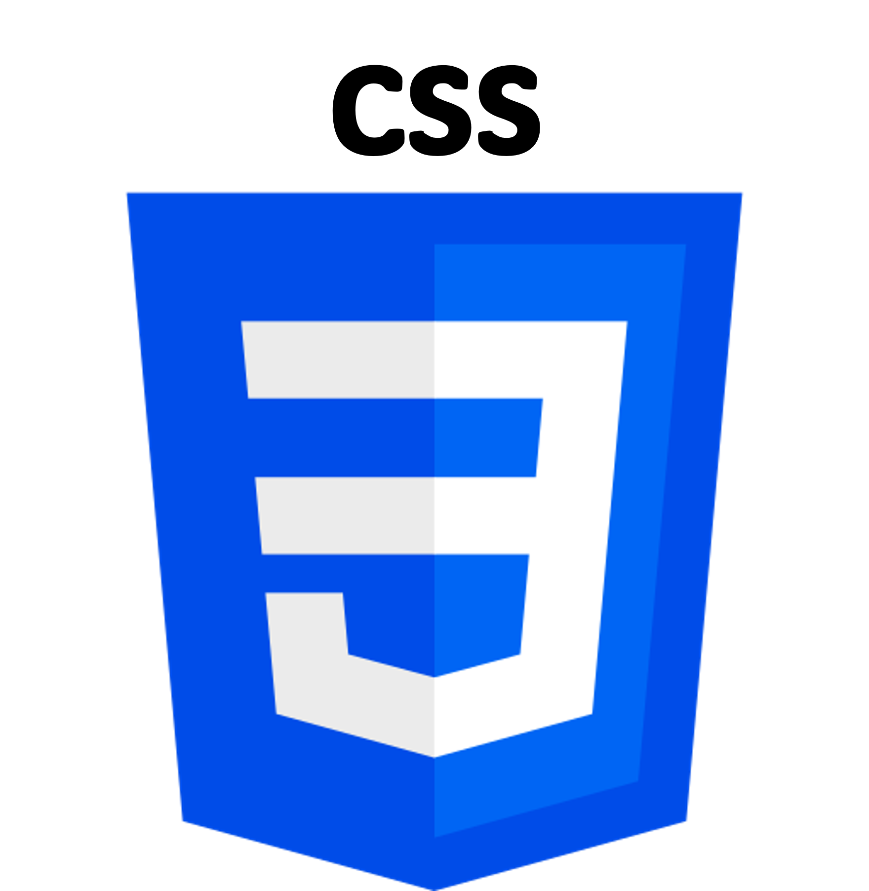
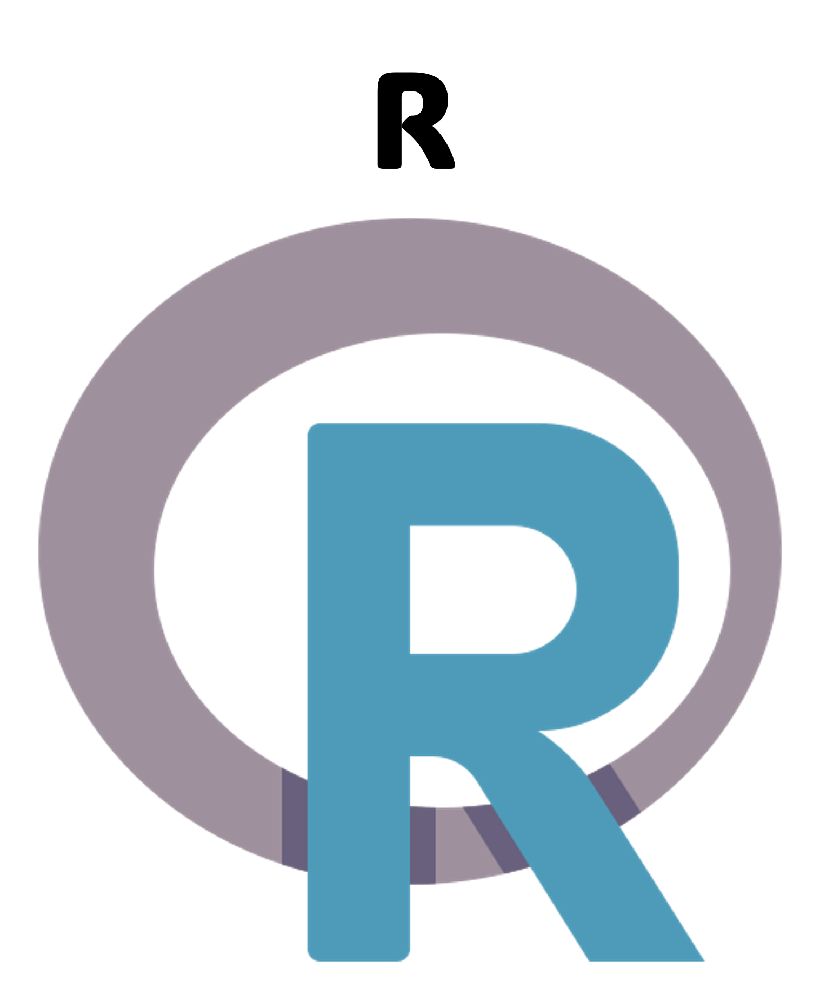
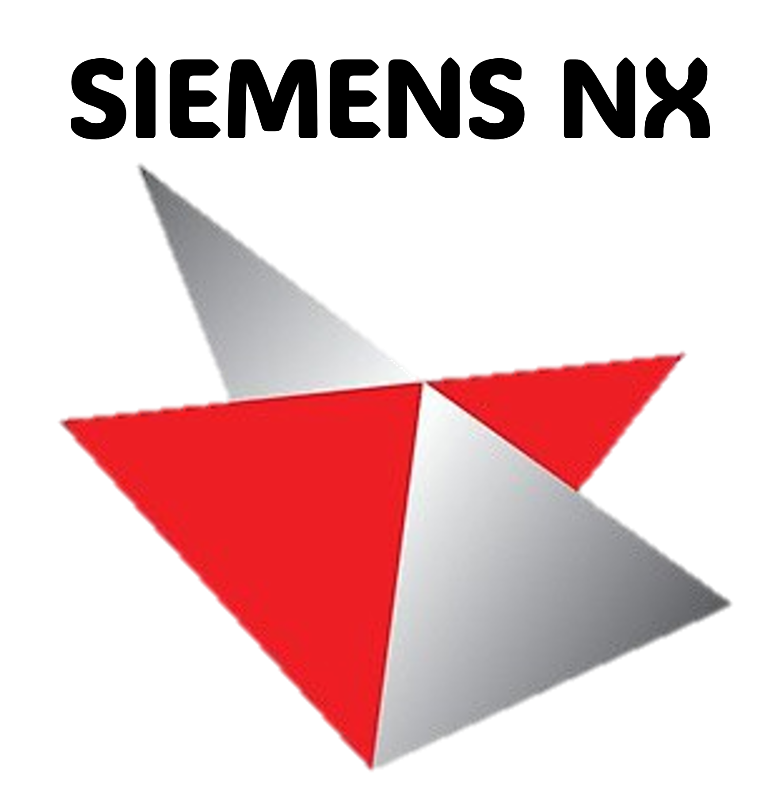
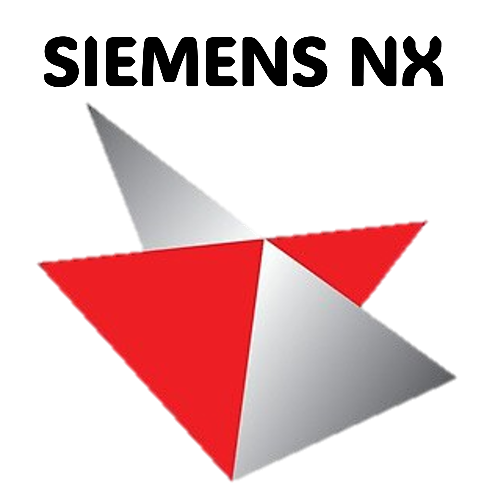

Lucía Herrero
Ingeniera Industrial & Analista de Datos
Ingeniera Industrial & Analista de Datos

¡Encantada! Soy Lucía Herrero. He creado esta web para poder mostrar mi portfolio y para que, quien esté interesado, pueda comprender un poco mejor mi trayectoria profesional y académica, además de mis habilidades.
En esta primera sección os hablaré de mí desde una perspectiva más humana, e incluso con cierto atisbo literario, para quien quiera conocerme más a fondo. Después, en las siguientes pestañas, os describiré de una manera más práctica mi recorrido, y también os mostraré mis primeros proyectos.
Si veis algún fallo en la web, no dudéis en decírmelo. Estos son mis primeros pinitos con la programación, así que habrá un montón que mejorar. ¡Espero que os guste!
7 de noviembre de 1997, Oviedo, Asturias. Amanece bajo un cielo frío y gris, como es costumbre. Cientos de nubes abrazan la ciudad con la típica serenidad de un otoño asturiano. No es el clima idóneo para que un girasol crezca, pero sí es el escenario perfecto para la llegada de una niña que, aunque nace en silencio, trae consigo una promesa: la de poner el mundo patas arriba.
Siempre he sido curiosa por naturaleza. Nunca me he conformado con saber cómo ocurren las cosas, sin buscar después un por qué. Quizás por eso el camino de las ciencias me parecía el más atractivo.
Con mis ganas insaciables de aprender y mi ambición por superarme constantemente, decidí estudiar ingeniería industrial a pesar de las críticas sobre su dificultad (que incluso motivaban mis ganas). Durante los 4 años del Grado me sentí como en casa. Llegué a ser de las mejores estudiantes de la promoción, consiguiendo varias matrículas de honor y algún que otro reconocimiento de excelencia académica. No podía pedir más.
Después continué con el Máster, independizándome por primera vez. El primer año viví y estudié en Madrid y el segundo año lo cursé en Estocolmo, con el programa Erasmus. No quiero extenderme con mi experiencia en Estocolmo, porque podría pasarme una vida entera hablando del tema, y no es el objeto de esta web. Sólo comentar que fue la mejor época de mi vida hasta hoy, y también el mayor punto de inflexión. Volví, supuestamente con todos los estudios terminados, pero... ¿y ahora qué?
Comenzamos la larga y controvertida "etapa laboral". Es esa etapa en la que puede (digo 'puede' por parecer optimista) que te encuentres:
Recuerdo una conversación con mi manager cuando empecé mi segundo trabajo: "Siento que hay algo que me impide brillar", le dije. Concluimos, sin mucho convencimiento, en que simplemente necesitaba más tiempo. Y tras acumular 3 años de experiencia profesional, decidí parar. Me di cuenta de que esta experiencia me había hecho crecer un montón. Y justo eso es lo que me ayudó a entender que necesitaba parar. Porque cuando el camino era el correcto, siempre había brillado. Y para buscar tu camino nunca es tarde.
Hoy estoy tremendamente agradecida de aquella arriesgada decisión que muchos no entendieron. Mucha gente me ve por fuera como alguien sociable, dulce, alegre. Pero mi yo primario es innovador, es ambicioso, es rebelde, es inconformista y es valiente. Y no puedo fallarle a mi yo primario.
Así que tras mucho comerme el coco, supe que había encontrado lo que me faltaba. Un enfoque más rompedor, más tecnológico, más poderoso, más relevante. Ahondar en el corazón del negocio y sumergirme en el mundo de los datos.
Y lo supe porque en cuanto lo ví volví a brillar.
En esta sección podéis encontrar un resumen de mi recorrido tanto académico como profesional. Más abajo, tenéis el timeline vertical para más detalles.

2024 - Presente
PROFESSIONAL STATUS:
This Data Analytics Bootcamp develops professionals with robust skills in data analysis and visualization. Graduates will acquire the ability to interpret complex datasets, apply statistical and mathematical techniques, and leverage Machine Learning and AI to drive insights. Through hands-on projects, they’ll be adept at transforming data into strategic decisions, making them valuable assets for both large corporations and startups.
CONTENTS:
2022 - 2024
ROLE OVERVIEW:
I was responsible for overseeing quality processes in a cutting-edge manufacturing project for electrical devices, focusing on process design, optimization, and validation in challenging environments, as a clean room.
KEY RESPONSIBILITIES:
2021 - 2022
ROLE OVERVIEW:
I worked within a multicultural team to analyze clients' business models and develop strategies to enhance their operations through new technologies.
KEY RESPONSIBILITIES:
2021
PROFESSIONAL STATUS:
This course provides a comprehensive exploration of digital transformation strategies and technologies, focusing on how businesses can leverage digital tools to innovate, improve efficiency, and stay competitive. Participants will gain hands-on experience with digital technologies, learn to develop digital strategies, and understand the impact of transformation on various business functions.
CONTENTS:
2019 - 2021
1 year in Erasmus program within the 2 years Master's Degree in UPM
PROFESSIONAL STATUS:
This Master’s program equips professionals with a balance of engineering and leadership skills, it enables professionals to adapt to various roles and drive technological advancements within the industrial sector. It emphasizes both technical expertise and strategic management, preparing graduates to solve complex problems, make critical decisions, and lead innovation in the industry.
CONTENTS:
2019
ROLE OVERVIEW:
As a Project Engineering Intern, I worked on both client and internal projects. I participated in the development phase of a client’s escalator design and contributed to an internal automation project for the company’s design tool.
KEY RESPONSIBILITIES:
2018
ROLE OVERVIEW:
As a Project Engineering Intern, I was involved in the project development phase for solar tracker systems, honing skills in design optimization, structural analysis, and technical problem-solving to support successful renewable energy solutions.
KEY RESPONSIBILITIES:
2015 - 2019
PROFESSIONAL STATUS:
This Degree provides both scientific and technological knowledge to versatile professionals who may satisfy the needs of the companies within the field of industrial technologies, by solving problems and taking decisions with critical reasoning.
CONTENTS:

 





 
